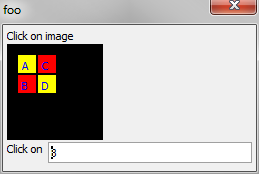

Support for Hotspots on Images
You can now define image maps for images that are displayed on an Xdialog with the {image} command. The image map defines rectangular areas on the image, the icon to use when the mouse is over the defined area and the event name to fire when the user clicks on the defined area.In the sample shown below the image map has four defined areas. If the user moves the mouse and clicks on one of the squares in the image, the 'value' variable will be updated to reflect the name of the square the user clicked on and displayed in the input area.
dim map as c map = <<%map% 10,10,20,20^$$application.alpha!A 10,30,20,20^$$application.chrome!B 30,10,20,20^$$application.firefox!C 30,30,20,20^$$application.ms!D %map% ui_bitmap_create("foo",1,1) ui_bitmap_draw("foo",<<%code% set_font("Tahoma,8","Blue") set_brush("yellow") set_units("pixels") fill_rect(10,10,20,20) text("A",15,15) fill_rect(30,30,20,20) text("D",35,35) set_brush("red") fill_rect(10,30,20,20) text("B",15,35) fill_rect(30,10,20,20) text("C",35,15) %code%) ui_dlg_box("foo",<<%dlg% Click on image;{image=%E=map%foo}; Click on [.40value]; %dlg%,<<%code% if len(a_dlg_button) = 1 then value = a_dlg_button a_dlg_button = "" end if %code%)

Additionally, there is a new UI_HOTSPOT_FROM_MAP Function, which converts an HTML map to alpha five hotspots, and we have added polygon and ellipse support to Alpha Five ui_hotspots.